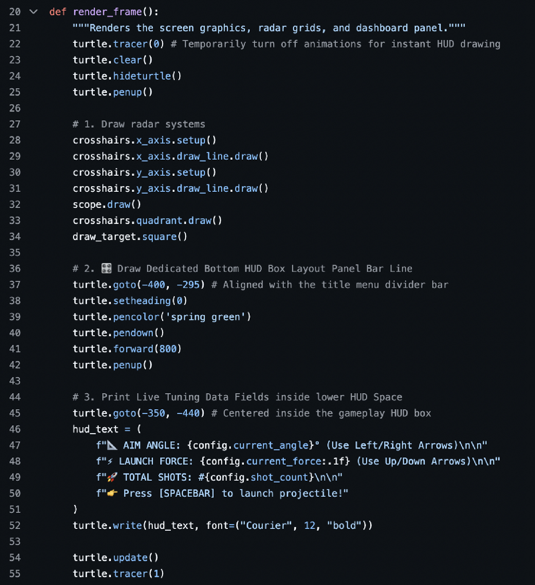
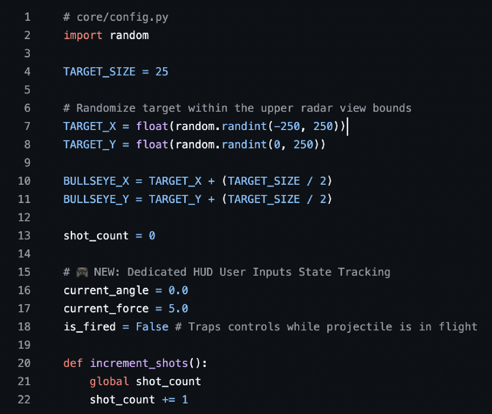

🎯 Architectural Backstory
This project originated as a foundational, text-driven target-hitting drill within a standard academic ZyBooks curriculum. The original implementation required blocking terminal-based text entries, halting script execution completely to wait for user text prompts, and utilized rudimentary unbuffered rendering cycles.
Recognizing the math framework's potential, I voluntarily extracted the baseline code and extensively re-engineered it. I transitioned the project away from linear, command-line console limitations into an interactive, real-time desktop radar grid and vector tracking simulation engine.
⚡ Asynchronous Controls & Engine Logic
The updated simulation decouples core data registries completely from visual presentation elements to protect application health metrics during flight execution cycles.
Key Technical Implementations:
- Non-Blocking Event Polling: Implemented active asynchronous keyboard listeners (
turtle.listen()) to poll hardware input flags without pausing background processing threads. - Real-Time Vector Tuning: Mapped dedicated callback routines directly to system arrow keys, allowing users to fluidly scale aim trajectories and launch force limits on a shifting numerical range.
- State-Locked Execution Boundaries: Programmed a conditional state gate (
config.is_fired) to instantly freeze coordinate modifications while physics arrays are computing, eliminating input cross-contamination.
🎨 Low-Latency Frame Buffer Optimization
To eliminate native rendering glitches and graphical lag, I reconfigured the canvas engine to handle data updates inside an optimized memory layout before rendering components to the screen.
- Double-Buffering Control: Bypassed standard visual trailing lag completely by turning off incremental line animation updates via
turtle.tracer(0)commands. - Layered Layout Redraws: Structured a procedural frame pipeline that sweeps stale vectors, draws Cartesian grids, aligns target circles, and stamps user data fields onto a clean layout.
- Instant Canvas Flushes: Forced instantaneous visual rendering by invoking explicit display flushes via
turtle.update()right before reopening global trace registers.
💻 Core Runtime Loop Implementation
Below is the decoupled rendering engine from core/game_play.py demonstrating manual trace buffering controls and asset pipeline isolation:

🎛️ State Registry & Dynamic Property Architecture
Below is the global tracking registry from core/config.py, showcasing random scalar objective placement bounds alongside explicit boolean toggle locks used to secure input parameters during runtime calculations:

📂 System Architecture Blueprint
The completely refactored component tree demonstrating modular package decoupling across core mechanics, display layer dimensions, and progressive view scenes:
-
📂 core/
- 📄 config.py — Global runtime states & registries
- 📄 game_play.py — Central engine render frame loops
- 📄 hit.py — Collision boundary validation math
-
📂 graphics/
- 📄 crosshairs.py — Cartesian layout lines & crosshairs
- 📄 draw_target.py — Objective box canvas specs
- 📄 scope.py — Overlay targeting reticles
- 📄 display.py — Global vector canvas controller
- 📄 x_axis.py / y_axis.py — Axis grid ruler metrics
-
📂 scenes/
- 📄 title_animations.py — Intro splash vector frames
- 📄 page_1.py / page_2.py — Instructional & config views
- 📄 page_3.py — Core simulation challenges
- 📄 animation_sequence_1.py — Inter-scene transitional logic
- 🚀 1play_me.py — Main application execution driver
🛠️ Technical Core Skills Featured
Review the Source Implementation
Explore the full multi-package framework layout, global configuration objects, and operational directories directly on GitHub.